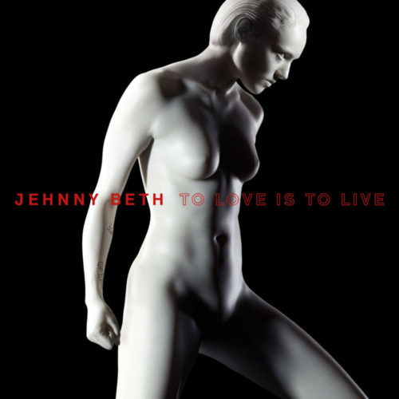
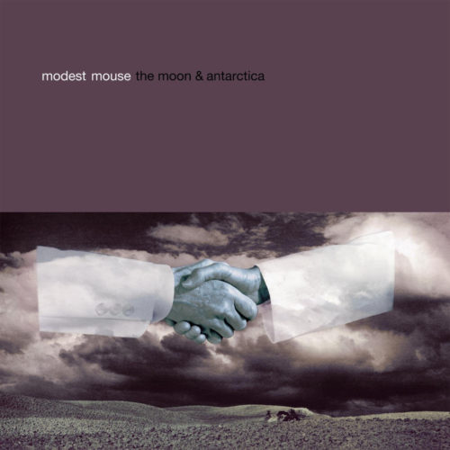
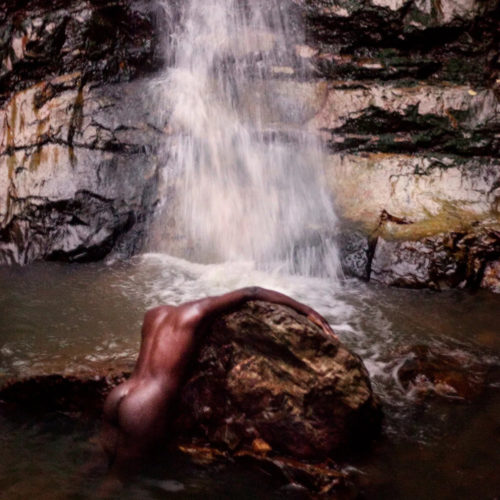

Reviews
Rough and Rowdy Ways
Bob Dylan

To Love Is to Live
Jehnny Beth
RTJ4
Run the Jewels

The Moon & Antarctica
Modest Mouse

Græ
Moses Sumney
The Man Machine
Kraftwerk
Cosmogramma
Flying Lotus
The Sophtware Slump
Grandaddy
Earth
EOB
Song for Our Daughter
Laura Marling
It Is What It Is
Thundercat
Saint Cloud
Waxahatchee
←
1
2
3
4
5
…
19
20
21
→
Sign up for monthly Audioxide roundups, if you like.